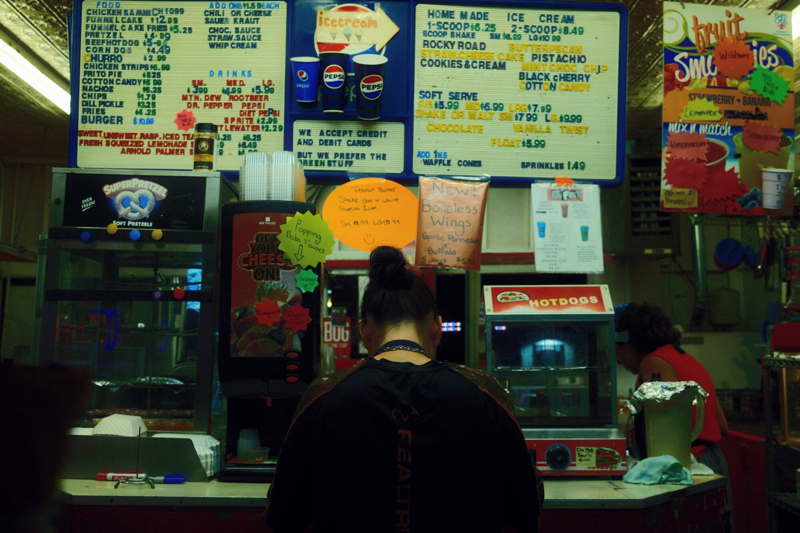
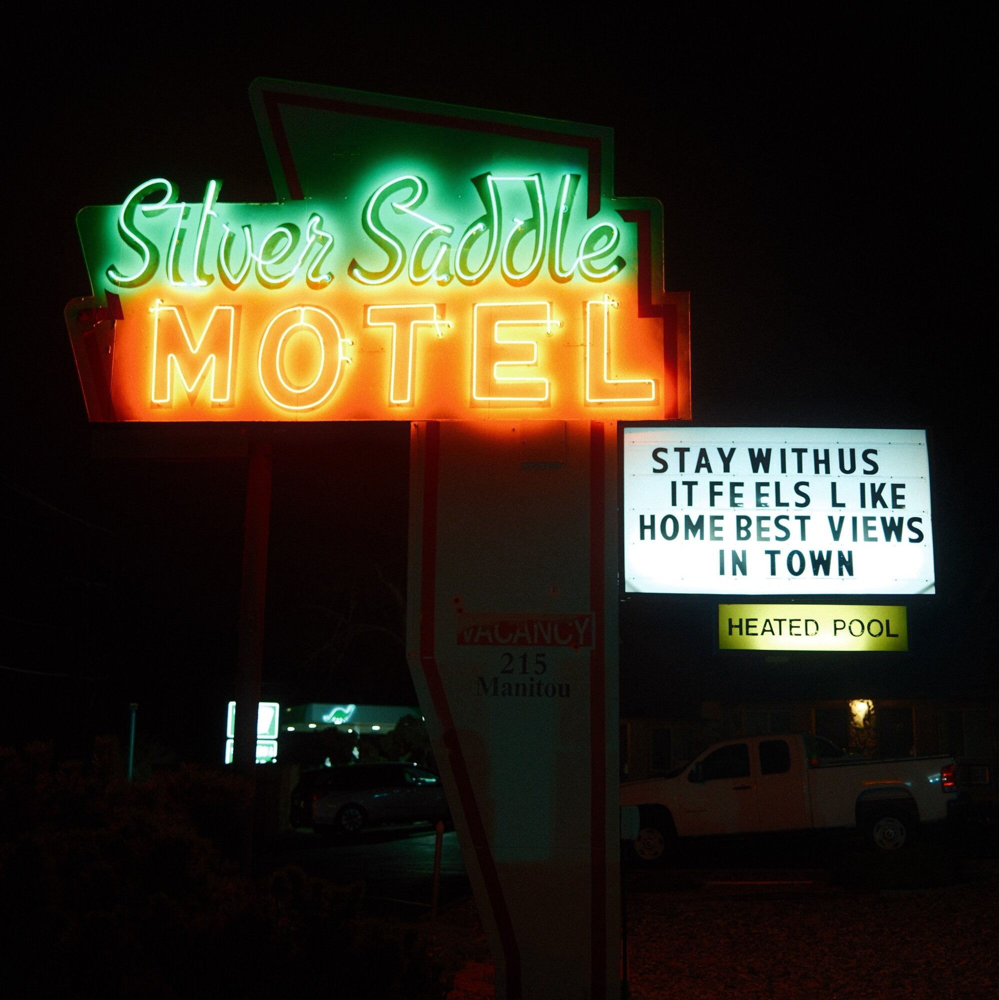
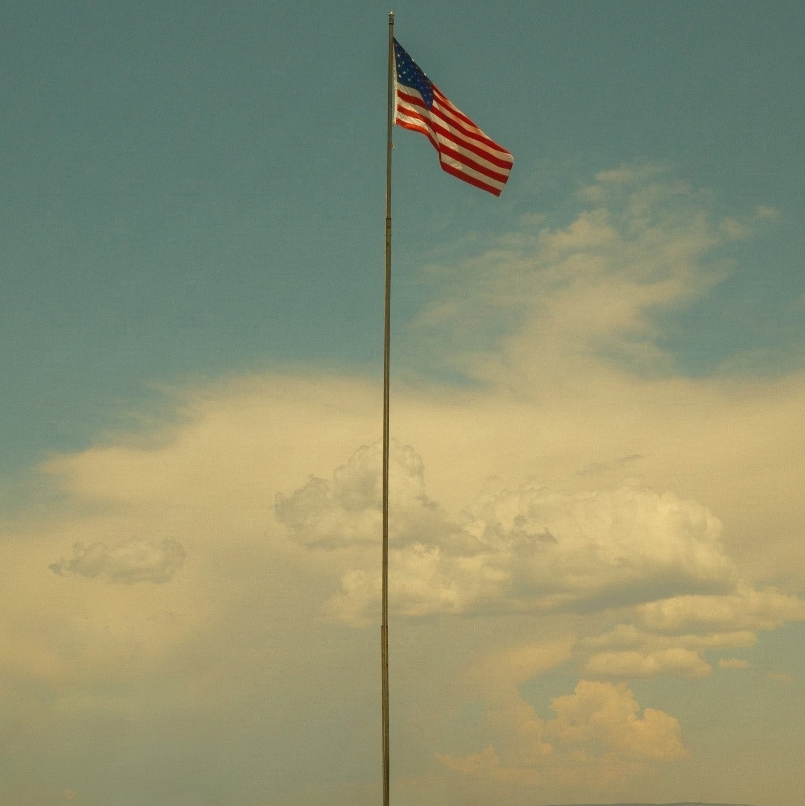
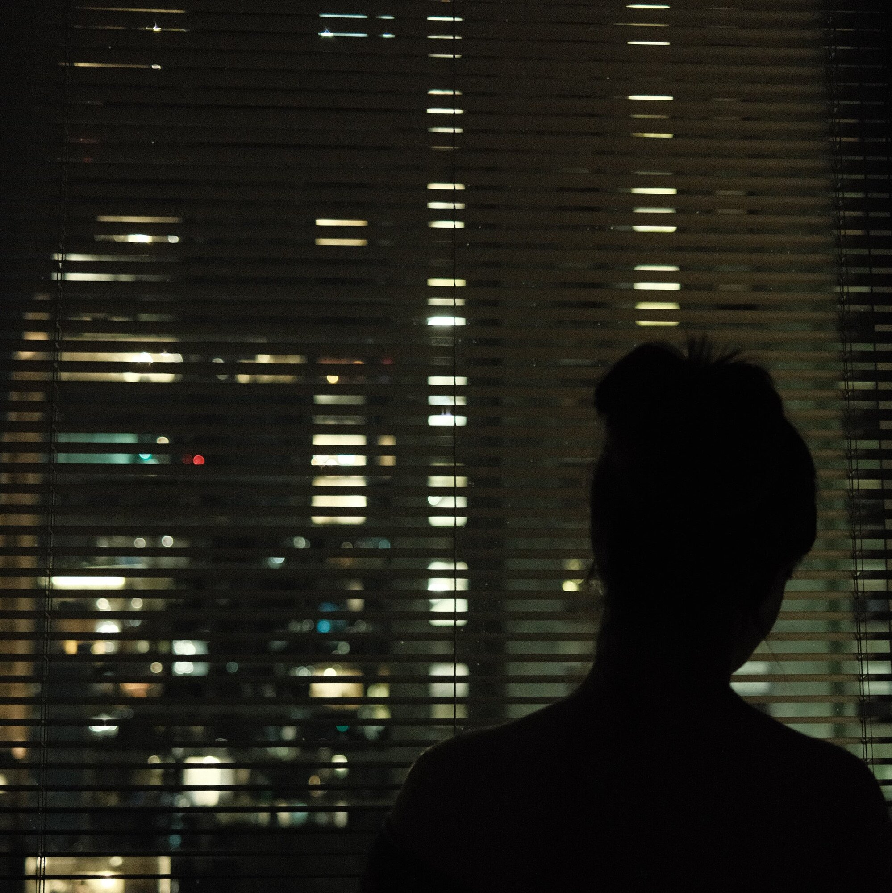
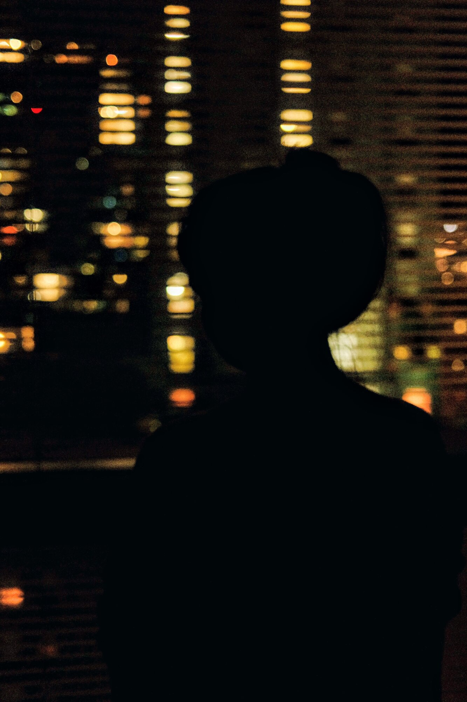
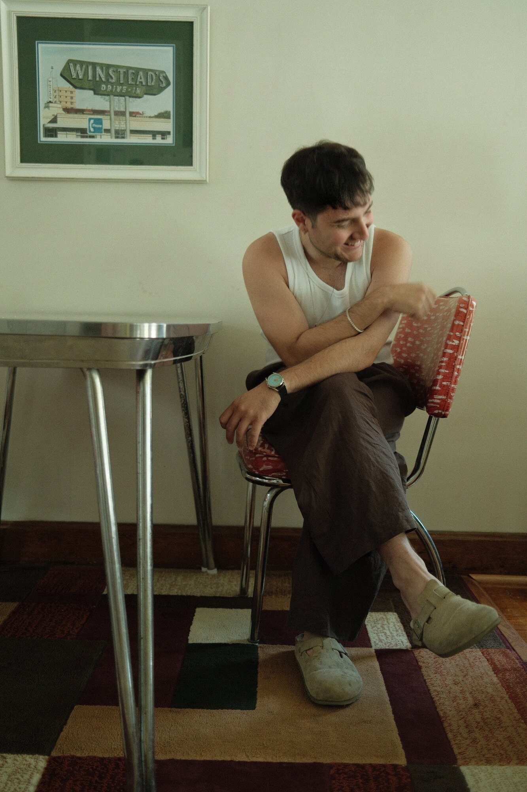

Writer & Filmmaker

Cosmo Santoni is a writer and filmmaker based in Chicago.
His work draws on surrealism, absurdism, and Greek tragedy, often filtering the darkness of the mundane through a kaleidoscopic comic lens and the lives of ordinary people with everyday habits and preoccupations.
He is interested in the fragile boundary between the ordinary and the mythic, and in the ways fate, guilt, desire, and identity surface through the routines and structures of everyday life. Americana recurs throughout his work as a landscape of transience, nostalgia, failed promises, and lives lived briefly alongside one another.
He is currently writing his debut short film, By Thursday They Will Die, which he is preparing to direct.
santonicosmo@gmail.com



